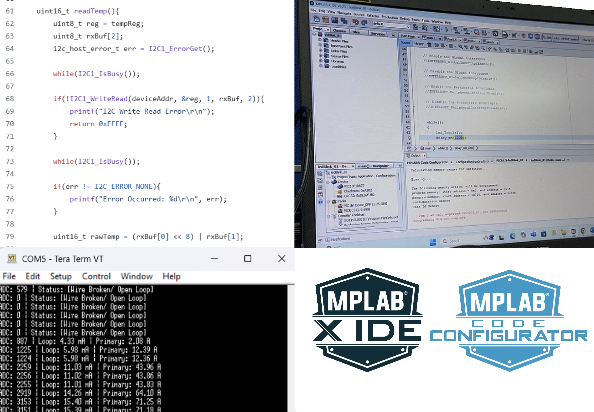
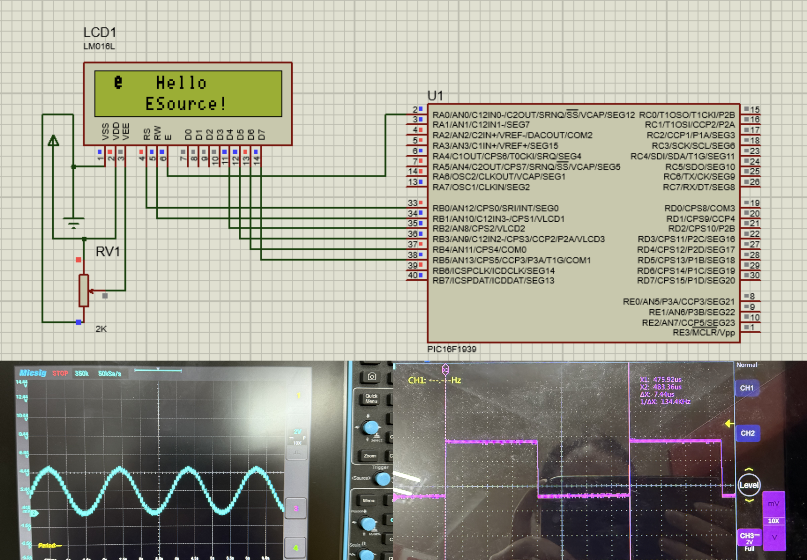
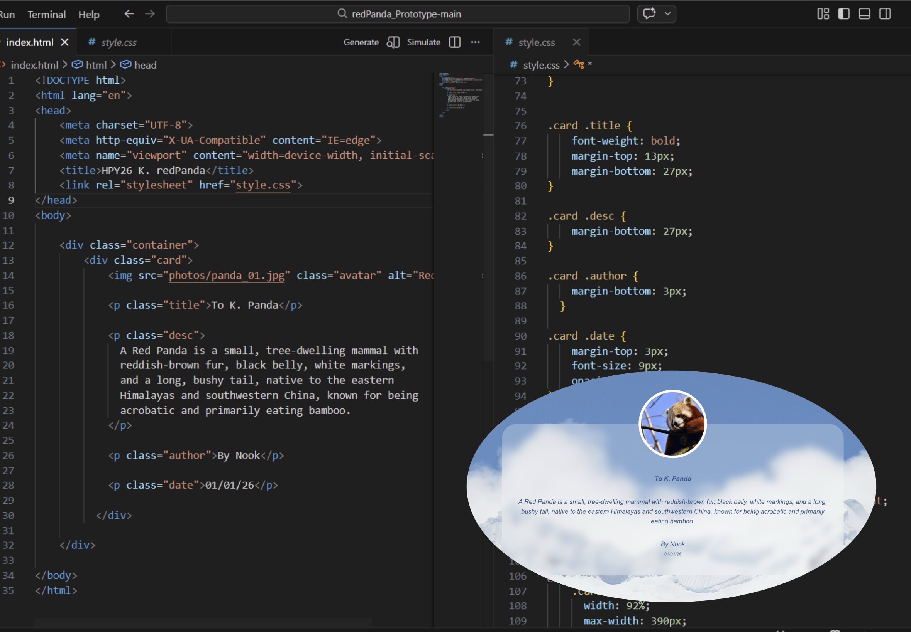

Technical Skills

Embedded Systems
MCU (PIC, 8-bit), Discrete, Interface, Connectivity, CapSense
Worked with MCU-based systems in real customer projects, providing coding support, debugging, and troubleshooting.

Programming
Embedded C, MPLAB X, MCC, Arduino
Developed and tested embedded applications using MPLAB X and Arduino for prototyping, debugging, and supporting customer solutions.

Tools & Simulation
Proteus, Oscilloscope, Multimeter
Used Proteus for circuit simulation and lab tools like oscilloscope and multimeter for debugging hardware issues.

Web Development
HTML, CSS (Basic Frontend)
Built personal portfolio website using HTML and CSS, focusing on layout and responsive design.
Soft Skills

Problem Solving
Troubleshoot MCU and system-level issues
Solved real-world technical issues for customers by analyzing system-level problems and proposing practical solutions.

Training & Presentation
Conduct workshops and product training sessions
Delivered technical training sessions and hands-on workshops to customers and internal teams.

Collaboration
Work with sales teams, suppliers, and R&D
Worked closely with suppliers, R&D, and sales teams to support project development and customer needs.
Other

Creative
Drawing
Created custom stickers as New Year gifts for colleagues and for ONCE at TWICE concert, showcasing creativity and attention to detail. See more in the Hobbies section.